Feryanto · UX case study
Feryanto · UX case studyscreens to a counsellor
mindline.sg design sprint · November 2026
From stretched to supported
How I helped redesign the way a burnt-out caregiver reaches a real counsellor at 3am. We went from 14 screens and two consent walls to 5 screens and none.


Rachel opens her phone
3:12am
Why I cared about this one
The easiest door to open at 11pm is a chatbot. It always agrees with you, and nobody is accountable. I wanted the safest door to be just as easy to open.
Singapore already has a safe front door: mindline.sg and the national 1771 line. The help exists. Our sprint asked why so few stressed people actually reach it, and what it would take for them to reach a person within minutes.
The stakes
When a chatbot plays doctor
In the US · as alleged in a lawsuit
A 31-year-old engineer with epilepsy tapered off her medication on a chatbot’s plan. Her parents are now suing.
She raised her concerns 158 times, and each time the bot reassured her.
1,500+
messages a week
158
concerns she raised
0 mg
the taper it drafted
Closer to home · Singapore
IMH is seeing patients tipped into delusions by heavy chatbot use.
Bots echo what users say, which can deepen anxious or distorted thinking. Doctors say a chatbot cannot replace human connection.
5
patients one IMH psychosis specialist now sees whose mental health worsened with AI use
Sources: Mothership, Oct 2026 · CNA, Mar 2026. The US case is an allegation in an ongoing lawsuit.

Illustrative persona
Rachel, 31
- Operations manager, full-time
- Cares for her mum (72, early dementia) after work and on weekends
- Only free late at night, and money is stretched by Mum’s care
- Doesn’t want colleagues or family to know
“Everyone’s tired. It’s just a busy season.”
18.2%
of 30–39s report poor mental health, up from 12.6% in 2020
MOH NPHS 2025
66%
of working parents report burnout, vs 45% of all workers
Jobstreet 2025
1 in 2
caregivers say they are “burdened” or “barely coping”
NCSS
+50%
rise in suicide deaths among 30–39s in 2024, the only age group to rise
SOS / ICA, 2026
70.9% → 59.6%
They still want help, but less of it from professionals
Share of 30–39s who would see a professional, 2024 to 2025. Turning to friends and family held at 84.5%.
MOH National Population Health Survey 2025, Table 8.4
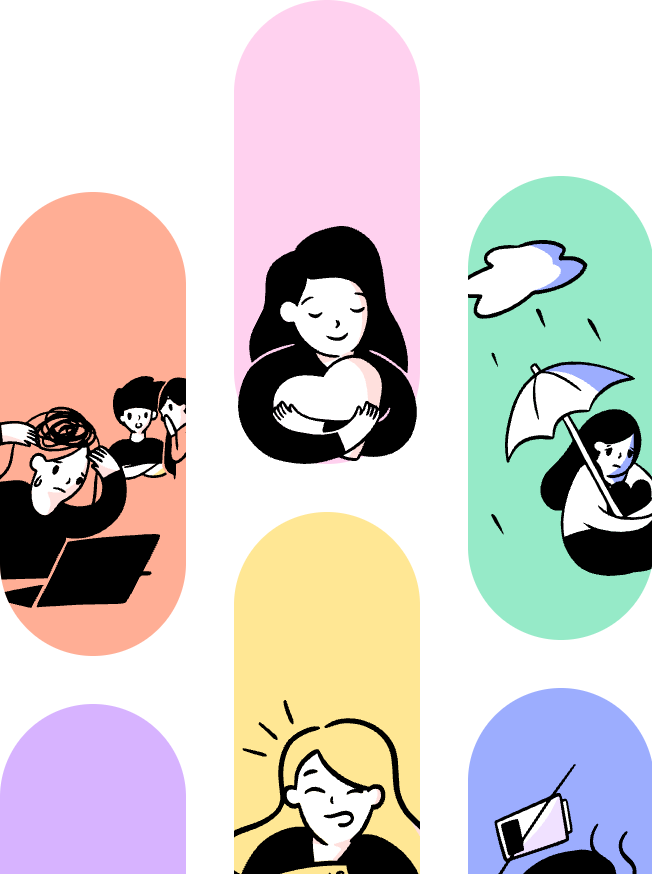
Our challenge
How might we help sandwiched millennials who are stressed, but not in crisis, find and start the right mindline.sg support within minutes?
I tried it myself · emulated iPhone, dark mode
I typed “I need help” into Google and counted every screen until it reaches a counsellor.
I captured the real journey with playwright-cli on 12 Nov 2026. Three steps had to be simulated: Google blocked the automated search, and we chose not to message the real 1771 line so we wouldn’t take up a counsellor’s time.
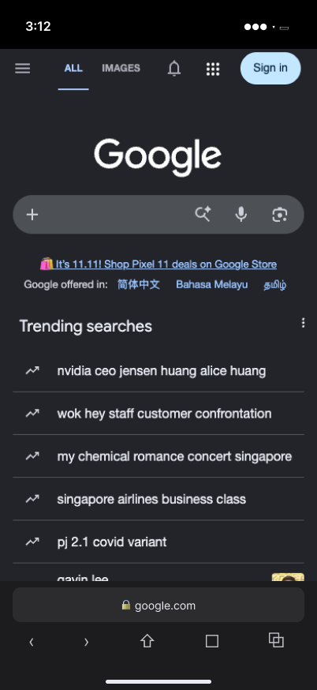
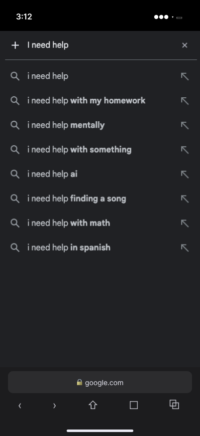
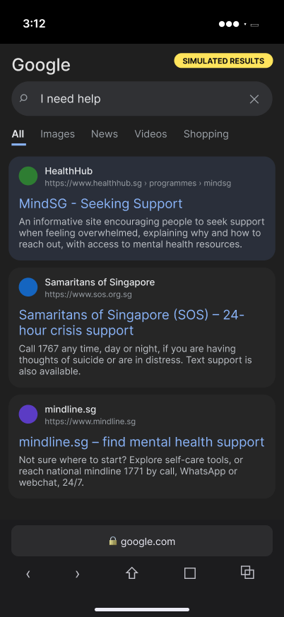
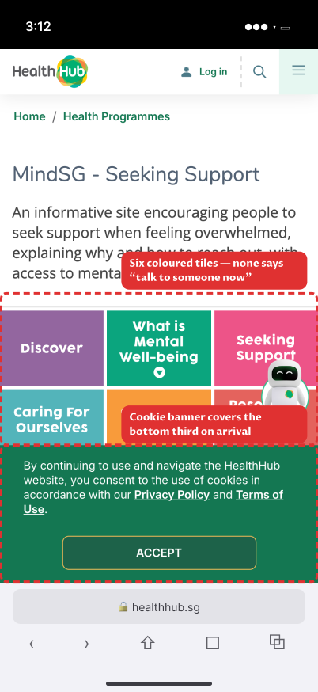
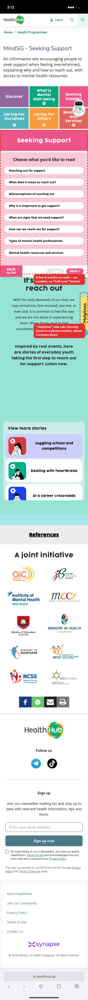
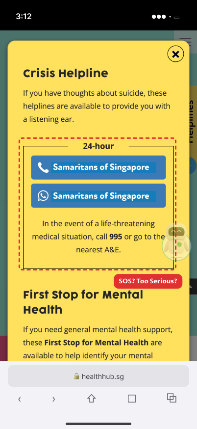
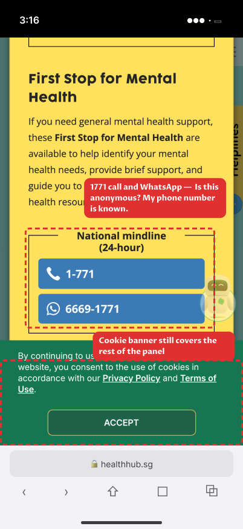
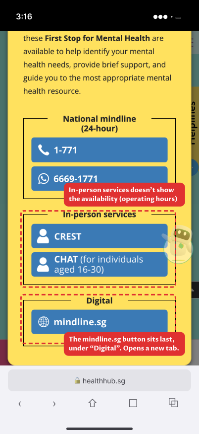
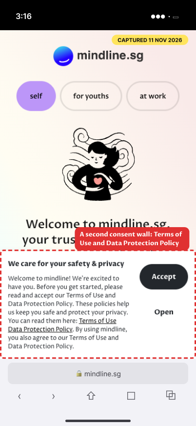
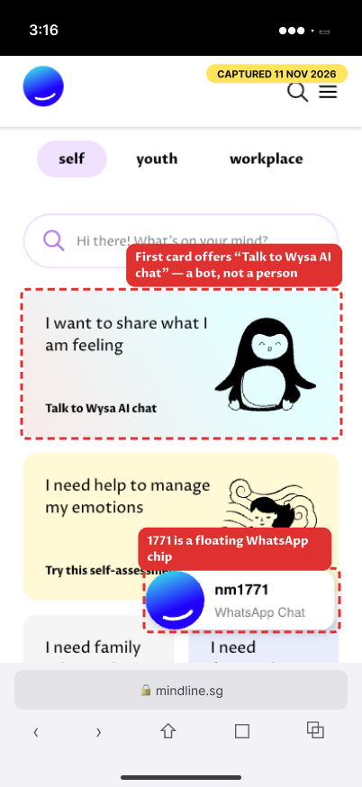
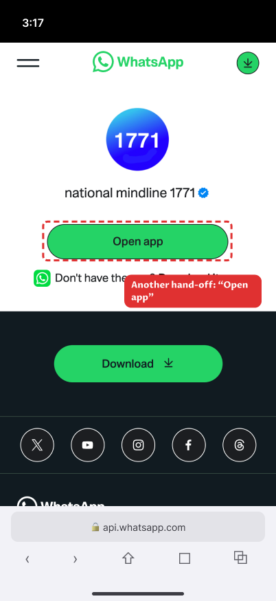
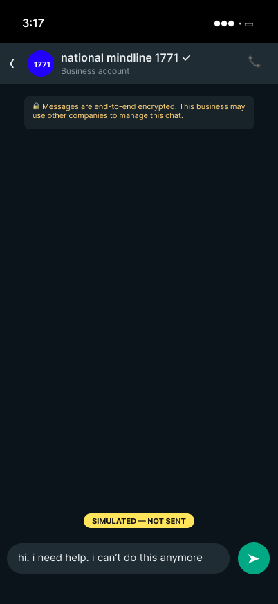
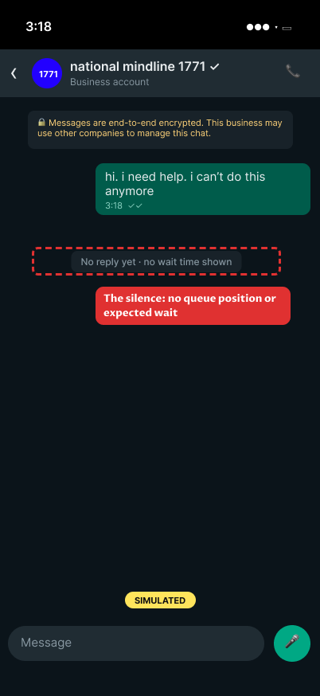
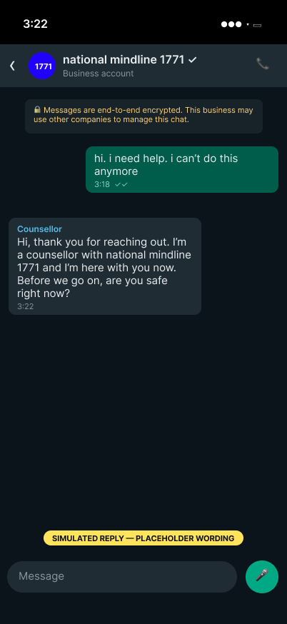
14
screens
~11
taps
2
consent walls
~10 min
3:12am → 3:22am
S4 · Lands on MindSG
Six coloured tiles, and none of them says “talk to someone now”
The first screen has no phone number. A cookie banner covers the bottom third of the page.
S10 · mindline.sg home
Two consent walls later, the first offer is a bot
The 1771 option is only a small floating chip. Someone who typed “I need help” is pointed to an AI chat first.
S13 · Sends, and waits
After sending: silence
The message is delivered, then nothing. There’s no queue position and no expected wait. This is where I’d expect people to give up.
S5 · Scrolls the whole page
Six and a half screens of scrolling, and still no number to call
She scrolls past articles, stories and partner logos, and never sees a phone number. The only one is hidden in the website’s code, and it’s an old IMH number that stopped working in June 2025.
The shortcut was there all along
At S7 she could have tapped 1-771 and been calling in about 7 taps. Nothing on the page makes that the obvious move. That became our brief: we didn’t need to add more help, just make the help that already exists obvious.
What we designed for
One door, one next step
01
Help before content
995, SOS and 1771 sit on the first screen of every page in the path, from the Google result onwards. Nobody has to go looking for them.
02
A person before a bot
“Talk to a counsellor” is the first thing she sees. Self-help is there for people who aren’t sure it’s serious, never as a gate.
03
Show the wait, keep the thread
A queue position instead of silence, then a code that brings her back to the same chat and plan without giving her name.
The redesign · web flow, anonymous
Same night, same search. This time she reaches a counsellor in 3 taps.

3:12am · Step 1 · Google
The search result tells her how to get help
- HealthHub rewrites the MindSG title and description: “Need help now? Call or WhatsApp 1771, or chat on mindline.sg.”
- A phone number is visible before she taps anything.
3:13am · Step 2 · MindSG
A help bar comes before everything else
- A dark bar at the top: Talk on mindline.sg · WhatsApp 1771 · Call 1771.
- The cookie notice shrinks to a thin bar that never covers help.
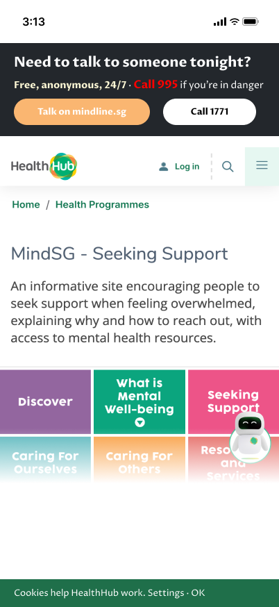
3:13am · Step 3 · mindline.sg
mindline.sg opens on “Talk to someone”, in the same tab
- A deep link (mindline.sg/talk?from=mindsg) skips the home page and the bot card.
- Consent is one line under “Chat here”, not a second wall.
- New: “Not sure if it’s serious?” leads to a 1-minute check that always ends in one next step.
0 consent wallssame tabanonymous
3:13am → 3:41am · Steps 4–6 · The chat
The wait is shown, and someone she can name joins

You’re number 3 in the queue
She sees her queue position and about how long it’ll take, instead of silence. A safety line is pinned above the message box.

3:17am · Mei joins
Mei reads what she wrote while she waited, so she doesn’t have to tell her story twice.
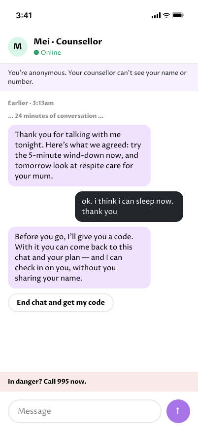
3:41am · A plan, then a code
Mei sums up what they agreed and explains the code before the chat ends.
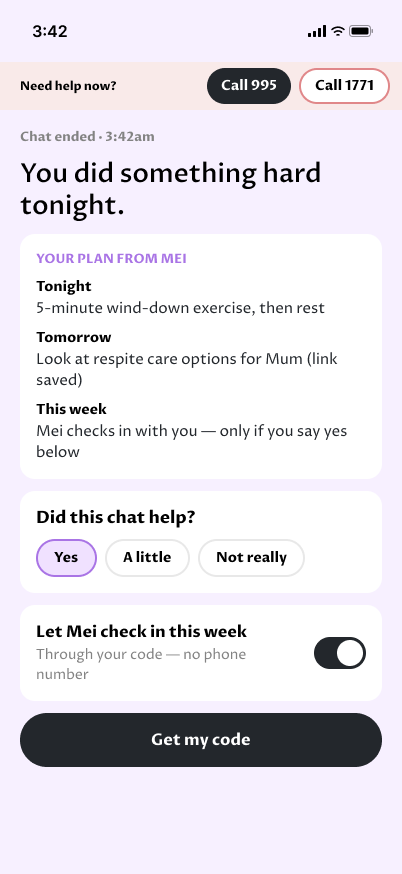
Step 7
Her plan stays after the chat
Tonight, tomorrow, this week. “Did this chat help?” takes one tap, and check-ins are opt-in through the code, not a phone number.
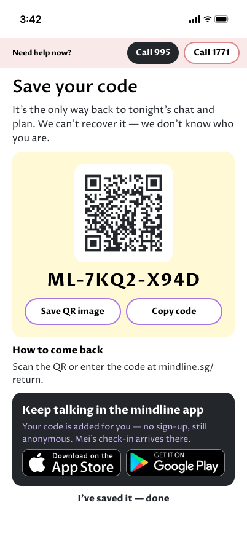
Step 8
A code to come back
A QR code and the code in large type. The same code works in the app, so she doesn’t start over. The code and link shown are placeholders.
If she’s not sure it’s serious
What’s weighing on you? Pick more than one.
- Built from mindline.sg’s own topic cards and illustrations, so it feels familiar.
- Rachel can pick Work and Caregiving together. The old site made her choose one.
- The topics shape the five quick questions and the next step she gets.
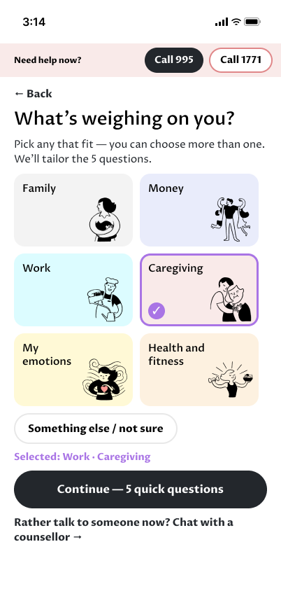
The anonymous app
The code carries the conversation into the app
The welcome screen offers two routes: “I’m new here”, or “I have a code from mindline.sg”. If she came from a web chat, she can scan, upload or paste her code and pick a nickname on one screen, in about 20 seconds.
The two app paths stay separate: someone with a code never lands in the “first chat” screens.
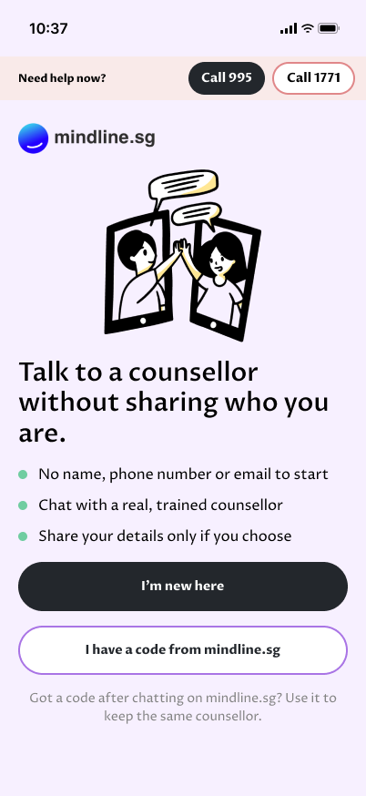
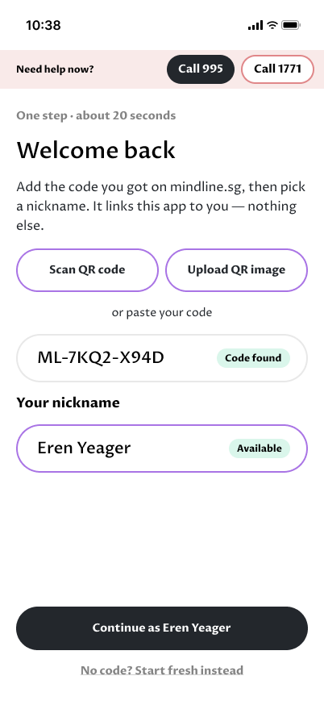
For caregivers who aren’t in crisis
From caregiving resources to a gentle check-in on herself
She starts with what she came for, help for Mum. Then the page asks how she is doing, and the check-in ends in a 1771 callback at a time she picks.
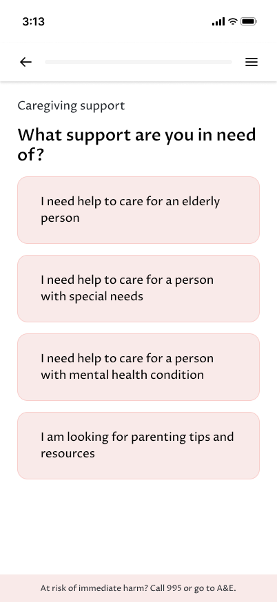
04 · Who are you caring for?
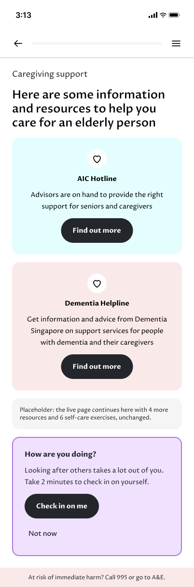
05 · Resources, then “How are you doing?”
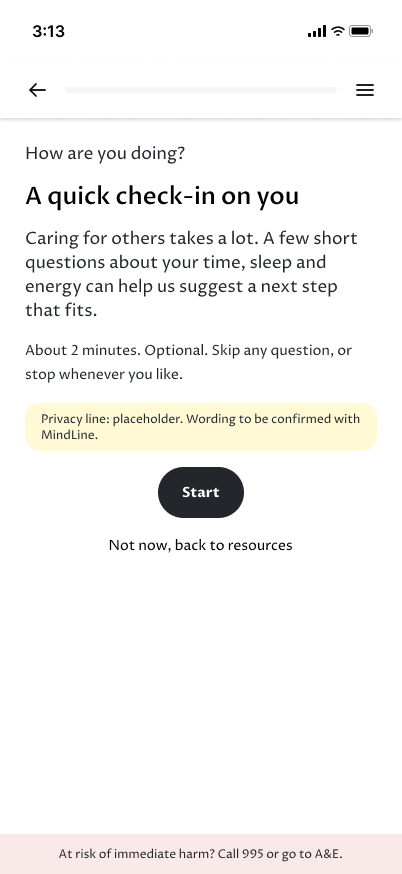
06 · A 2-minute check-in
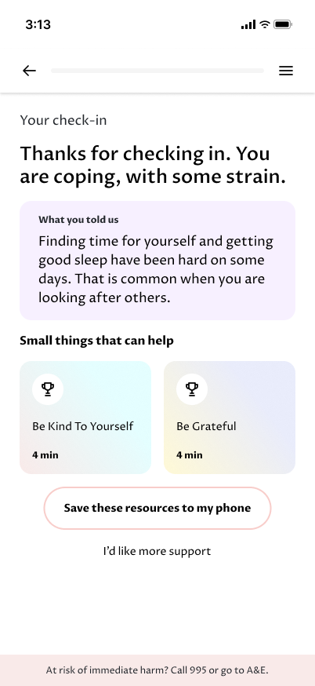
09 · A reflection in her words
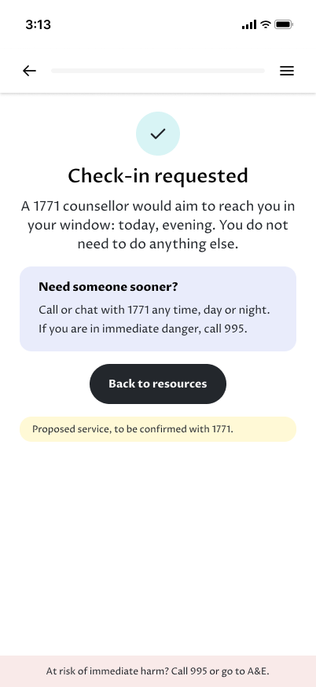
14 · Check-in requested
Before and after
Half the steps, none of the walls
145
~113
taps
20
consent walls
~10 min~5 min
until a counsellor replies
Omni-channel
She won’t come looking, so we meet her where she already is
1
Culture · offline
Theatre plays about mental health
Fliers and a QR code in the programme and on screen at curtain call. Example: How To Be A Kid, Gateway Theatre, about a 12-year-old who becomes a carer.
2
Official outreach event
NCSS Beyond the Label Festival
A mindline.sg booth, plus a QR code on talk slides and lanyards. The festival is about workplace mental health, a direct match for burnt-out working caregivers. We’d target the 2027 edition.
3
Transit ads · public spaces
MRT stations and bus stops
Panels at CBD interchanges such as Raffles Place and Tanjong Pagar, on the commute home. Also bus stops outside polyclinics, where caregivers wait with their parents.
Ad copy, in her words
“Stretched between work and Mum? 4 minutes, anonymous.”
Any door
Scan a QR code or short link made for that channel
→
One page
mindline.sg for work and caregiving stress
→
Under 4 min
Self-help, or a chat with a counsellor
→
Booked
A certified counsellor
Impact · our estimates, not yet measured
The same team can help more people, without hiring
415 h
of counsellor time freed every month
+2–3
counsellors’ worth of time, about 9% of a team of around 30
+1,250
more contacts a month at 20 minutes each
50%
target for completed referrals, up from 33–42% today
How we’d measure it · 1
Visits to mindline.sg, by channel
Unique visitors and sessions split by source (QR, social media, Google, WhatsApp), using web analytics and a tagged link for each channel. The baseline is 50,000+ unique visitors a month.
How we’d measure it · 2
Confirmed counsellor bookings
Bookings started vs confirmed, and where people drop off, matched to anonymous session IDs. One guardrail: people stay anonymous until they choose to book.
Model assumptions: a 20-minute average contact, about 5,000 contacts a month (MOH, 13 Feb 2026) and 160 working hours per counsellor. All targets are proposals until we have a 3-month baseline, and need confirming with MOHT/IMH data.
What I’m taking away
Reflections
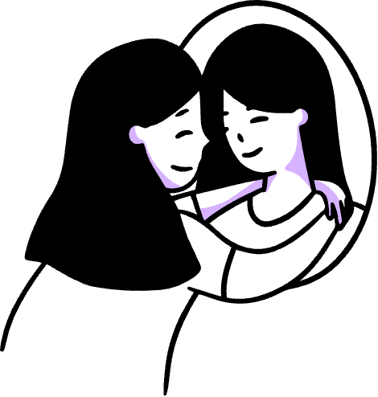
01
Walk the journey before you redesign it
Counting every screen at 3am turned a vague feeling of “it’s confusing” into numbers the team could act on: 14 screens, two walls, a retired phone number.
02
The best fix was mostly about putting things in the right order
Almost every piece of help already existed. We changed what comes first, and that halved the journey.
03
Being honest about what’s simulated
We didn’t message the real 1771 line, and we labelled every mock-up and estimate as one. In mental-health design, that restraint is part of the work.
What’s next
Validate the flow in 5–8 interviews with caregivers, then pilot the tracked journey.
Next Tuesday at 8pm, Rachel has a booking with a counsellor, not a closed tab.
Team 2
Heng KhuanJustinMing YingHaylam (Yuk Ying)ZafirahFeryanto
A student design sprint. mindline.sg, MindSG and HealthHub screens are captured or redesigned for study only. The illustrations and marks belong to their owners.
In danger right now? Call 995. For 24-hour emotional support, call SOS 1767 or national mindline 1771.Feryanto · 2026